Suena el timbre
10:00
Y tu comida
ya va en
la fila.
Pides desde el primer momento. Pasas cuando salga tu número.
Fadori. Instituto RembrandtCómo funciona, atrás →
Así de fácil.
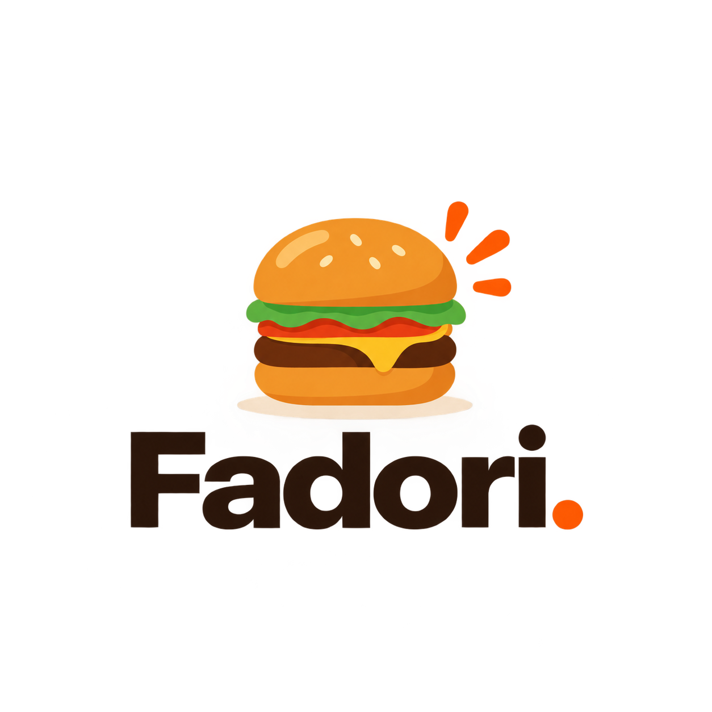
Escanea y pide
La primera vez haces tu cuenta con tu correo y tu credencial: así nadie pide a tu nombre.
Con Fadori
0
minutos en la fila.
El recreo es tuyo.
Fadori. Cooperativa sin filasLas cuentas, atrás →
Lo medimos
El recreo dura
30 minutos.
Antes
15 a 20 min de fila
para ti
Con Fadori
Comes con calma, el pasillo queda libre y regresas al salón sin carreras.
Tu turno
12
Tú sigue en lo tuyo.
Nosotros te avisamos.
Fadori. La pantalla de turnosLa pantalla, atrás →
La pantalla de la cooperativa
Turnos, partidos
y mucho más.
Partidos en vivocon su marcador
Radio Divergenteslos episodios del 3.1
Películas y músicamientras esperas
Proyectosde tus compañeros
Tu turno en voz«Turno 2, ya está»
Foto del partido: EileenSanda, CC BY-SA 3.0, Wikimedia Commons
Fadori.Instituto Rembrandt
Imágenes ilustrativas
Pide
desde
el primer
momento.
Llegas al recreo y tu comida ya va en camino.
Fadori. Cooperativa sin filasLas reglas, atrás →
Juego limpio
Las reglas
de la casa.
5
Hasta 5 pedidos por recreoPara que alcance para todos.
ID
Tu cuenta es tuyaCorreo, contraseña y tu credencial, una sola vez.
$
Pagas al recogerEn la cooperativa, cuando pasas por tu pedido.
5:00
¿Te arrepentiste?Lo cancelas desde «Tu turno» en los primeros 5 minutos.
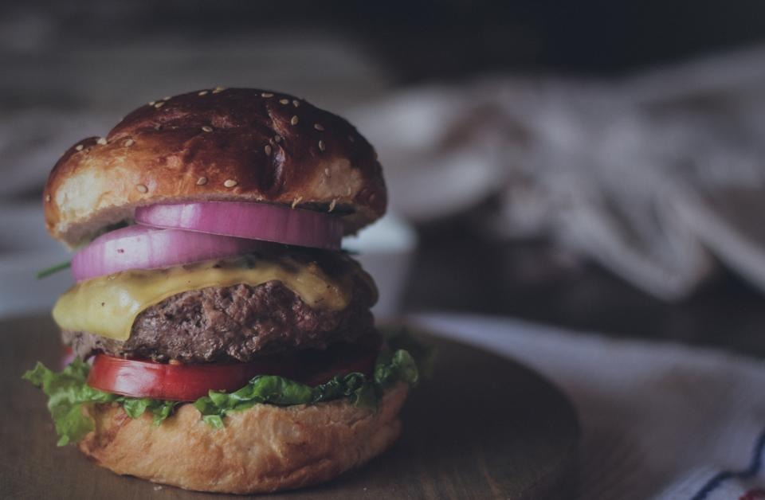
Imágenes ilustrativas
El recreo es
para comer,
no para formarse.
Fadori. Instituto RembrandtEscanea atrás →
Pensado para ti
Encuentra lo tuyo
en un segundo.
⌕ Busca por nombre: torta, taco…
Plato fuerteAntojitosTortas y sándwichesBebidasBotanasDulces y postres
¿Alergias?Toca cualquier platillo y dice qué contiene. Marca tus alergias y te avisamos cuando algo las lleve.
¿Sin señal?La app abre con lo último que viste y manda tu pedido sola en cuanto vuelve el internet.
Ya puede pasar
¡Ya
está!
Ve por él.
Tu número sale en verde en la pantalla y en tu teléfono. Di tu código y listo.
Fadori. Cooperativa sin filasTu código, atrás →
Al recoger
Tu pedido
tiene código.
Cuando esté listo, di tu código en el mostrador. Así nadie se lleva lo tuyo.
Ejemplo de código. El tuyo sale en «Tu turno», arriba a la derecha.
Mientras esperas
Partido,
podcast
y recreo.
Foto del partido: EileenSanda, CC BY-SA 3.0
Fadori. La pantalla de la cooperativaQué pasa ahí, atrás →
En la pantalla
No sólo
turnos.
VS
Partidos en vivoLos torneos de la escuela, con su marcador en tiempo real.
Radio DivergentesLos episodios del podcast del 3.1.
▶
Películas y músicaPara que esperar no se sienta.
3.1
Los proyectos de tus compañerosSTEAM, proyectos sociales, negocios y torneos.
((·))
Y tu turno en voz alta«Turno 7, tu pedido está listo».
Imágenes ilustrativas
Tacos
sin fila.
Arrachera, bistec, chorizo y choriqueso. Pídelos desde la app.
Fadori. AntojitosEl menú, atrás →
Imágenes ilustrativas
Antojitos
Lo que hay
en la app.
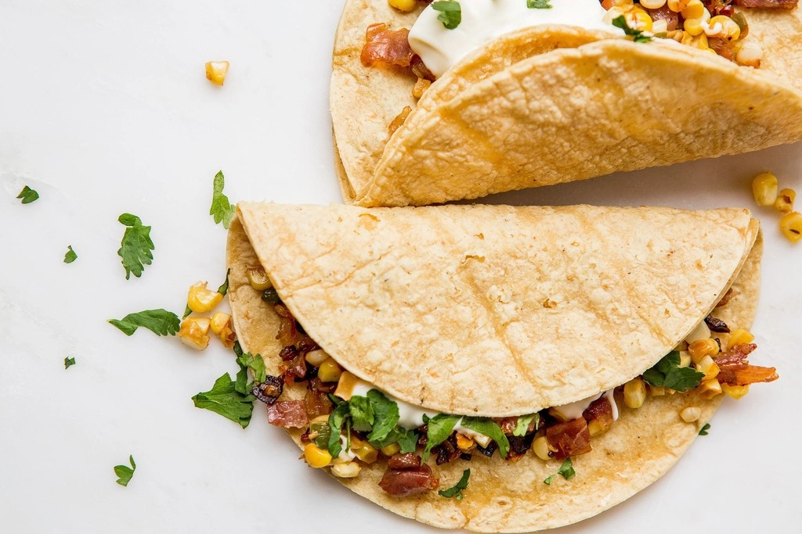
Tacosarrachera · bistec · chorizo · choriqueso · órdenes de 3
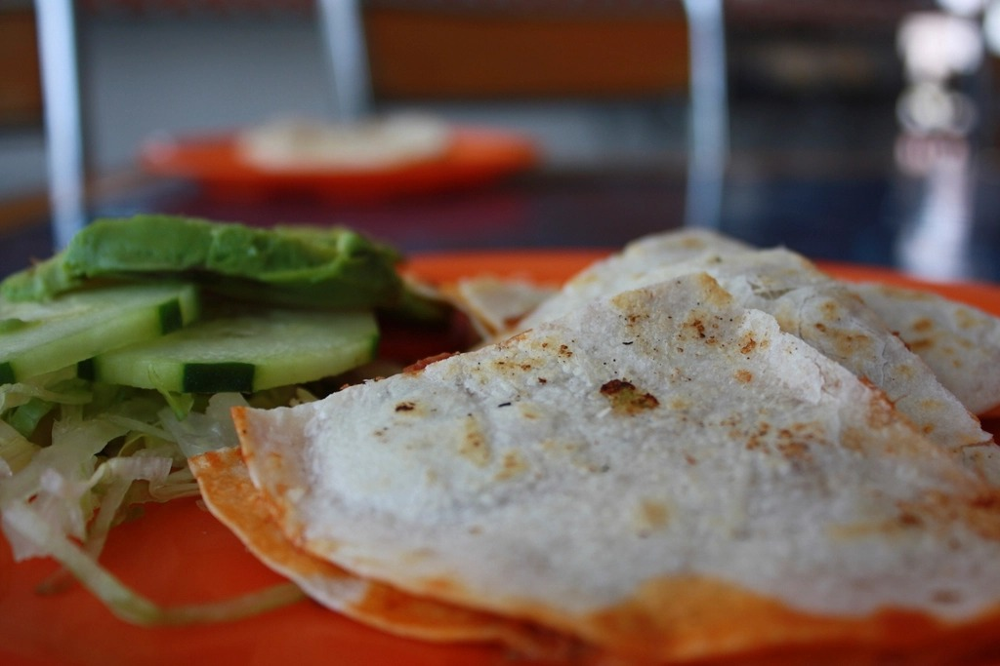
Quesadillassencilla o con carne
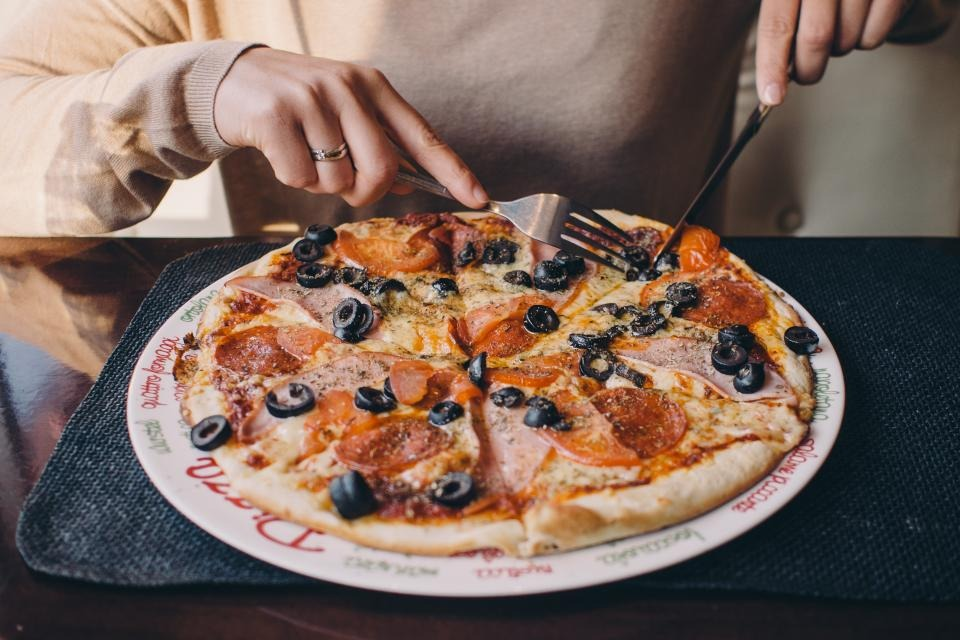
Pizza individualpara ti solito
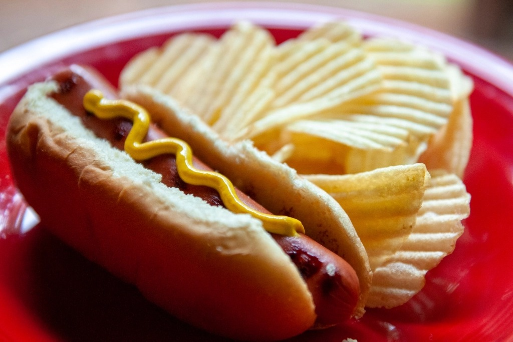
Y másbanderilla · tortas · enchiladas
Precios y lo que hay hoy, siempre al día en la app.
¿Te arrepentiste?
5:00
minutos para
cancelar tu pedido.
Desde «Tu turno», con un toque. La app te dice cuánto tiempo te queda.
Fadori. Juego limpioPreguntas, atrás →
Preguntas
frecuentes.
¿Cómo pido?Elige en el menú, toca Pedir y te damos turno.
¿Necesito cuenta?Sí, una vez: correo, contraseña y foto de tu credencial.
¿Cómo pago?En la cooperativa, al recoger.
¿Cuántos pedidos?Hasta 5 por recreo.
¿Puedo cancelar?Sí, en los primeros 5 minutos, desde «Tu turno».
¿Y si se acaba algo?La app te avisa y eliges otra cosa. No pierdes tu lugar.
¿Quién ve mis datos?Sólo la cooperativa, para entregarte.
¿Sin internet?Tu pedido se manda solo cuando vuelve la señal.
¿Otra duda?
Toca el «?» en la app
Imágenes ilustrativas
Hot dog.
Cero fila.
Fadori. Cooperativa sin filas¿Cuánto traes?, atrás →
Truco de la app
¿Cuánto
traes?
Dile a la app cuánto dinero traes y te arma combinaciones del menú que sí te alcanzan.
Está arriba del menú: «¿Cuánto traes? Te armo lo que sí alcanza».
Imágenes ilustrativas
Bebidas
Tu capuchino,
sin fila.
Fadori. Cooperativa sin filasAlgo frío, atrás →
Para acompañar
Algo frío,
algo crujiente.
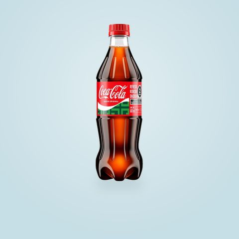
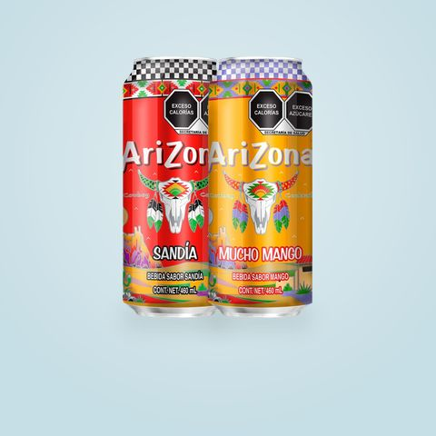
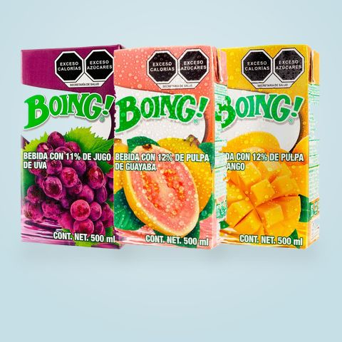
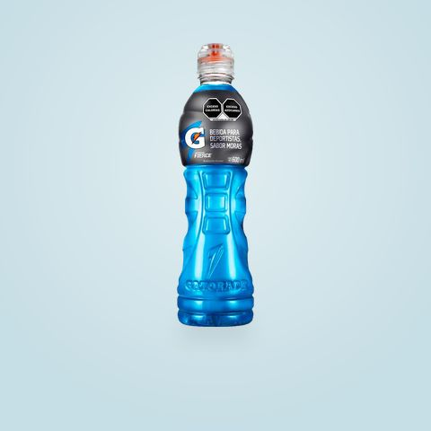
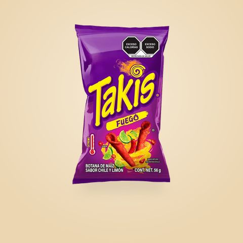
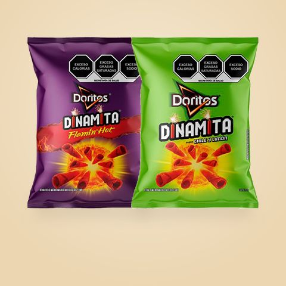
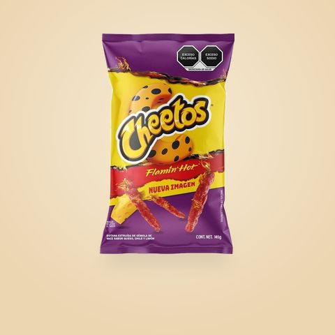
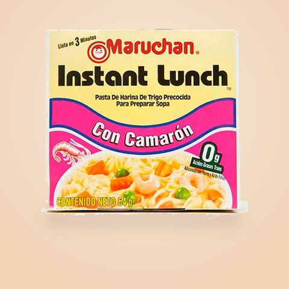
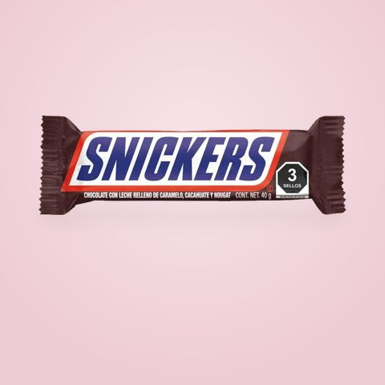
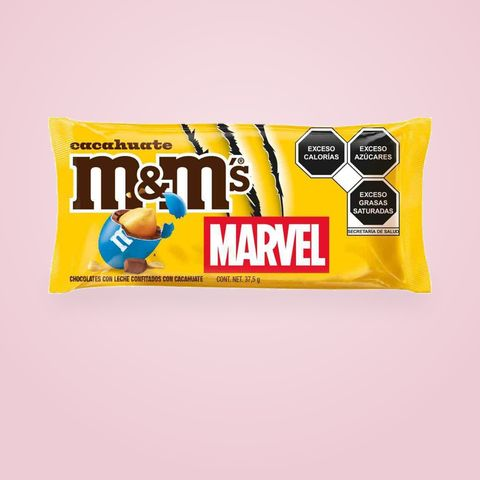
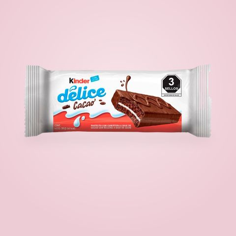
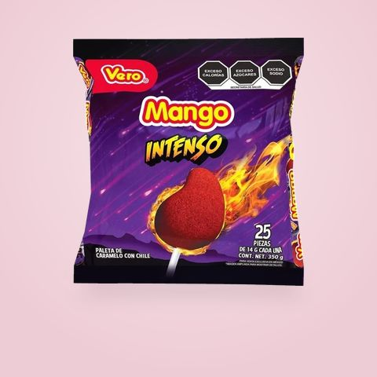
Lo que haya en la cooperativa ese día. Las marcas son de sus dueños.
Fadori · ahora
¡Tu pedido ya está!
Turno 7 · ve por él al mostrador
Te
avisa
mos.
Tú sigue en lo tuyo. Tu teléfono suena cuando esté listo.
Fadori. Cooperativa sin filasInstálala, atrás →
Para que te llegue el aviso
Ponla en tu
pantalla de inicio.
iPhone
- 1 Ábrela en Safari
- 2 Toca Compartir
- 3 Agregar a inicio
- 4 Ábrela desde el ícono y acepta los avisos
Android
- 1 Ábrela en Chrome
- 2 Toca los tres puntitos
- 3 Instalar app
- 4 Acepta los avisos
Escanea para instalar
Se instala en segundos y no ocupa espacio como una app de tienda.
Proyecto STEAM
Hecho
por
alumnos.
3.1
Fadori nació en el Rembrandt para resolver la fila de la cooperativa. De alumnos, para alumnos.
Fadori. Instituto RembrandtPor qué importa, atrás →
Una fila menos
cambia el recreo.
1
El pasillo queda librenadie hace bulto esperando
2
La prefectura cuida toda la escuelay no sólo la fila
3
Comes con calmay te da tiempo de despejarte
4
El salón regresa más tranquilocon la energía ya gastada
Fadori.Instituto Rembrandt
Imágenes ilustrativas
Pizza
en 3 toques.
Fadori. Cooperativa sin filasEscanea atrás →
Escanea.
Pide. Come.
Fadori. La cooperativa sin filasInstituto Rembrandt
La cooperativa
sin filas.
Fadori. Instituto RembrandtEl menú completo, atrás →
El menú
en la app.
Escanea
Plato fuerteEnchiladas verdes
Tortas y sándwichesTorta de milanesa · Hamburguesa · Hot dog · Molletes
AntojitosBanderilla · Pizza individual · Tacos de arrachera, bistec, chorizo y choriqueso · Órdenes de 3 tacos · Quesadilla · Quesadilla con carne · Maruchan
BebidasCoca-Cola 600 ml y chica · Arizona · Boing · Gatorade · Agua 600 ml, de litro y mineral · Yakult · Café capuchino
BotanasTakis Fuego · Doritos Dinamita · Tostitos salsa verde · Cheetos Flamin’ Hot · Crujientes · Chip’s jalapeño · Cacahuates japoneses
Dulces y postresBrownie · Galletas · Snickers · Milky Way · M&M’s · Kinder Delice · Carlos V · Peelerz · Halls · Tutsi Pop · Pelonetas · Pelón · Tix Tix · Mazapán · Paletas · Tarrito
Precios y lo que hay hoy, siempre al día en la app.
Fadori.Instituto Rembrandt